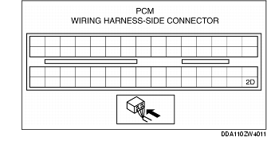
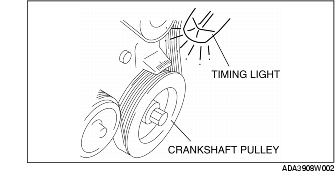

Ignition timing inspection [ZY]
1. Complete the engine tune-up preparation.
2. By referring to the following procedure, connect the timing light to the PCM terminal 2D wire.

- • To prevent poor contact at the connector terminal, be careful not to pull the wire on the connector side.
- • Pull out the wire 20-30 mm {0.79-1.18 in} so that the pickup clip of the timing light can be connected. After the ignition timing inspection, bundle the pulled out wire back together with other wires using tape.
-
(1) Pull the PCM terminal 2D wire out of the bundle (pull the bundled side only, not the connector side).

- (2) Connect the pickup clip of the timing light to the PCM terminal 2D wire.
3. Verify that the crankshaft pulley alignment mark (white) is within the specification.

Ignition timing
4. Verify that ignition timing advances when the engine speed increases gradually.